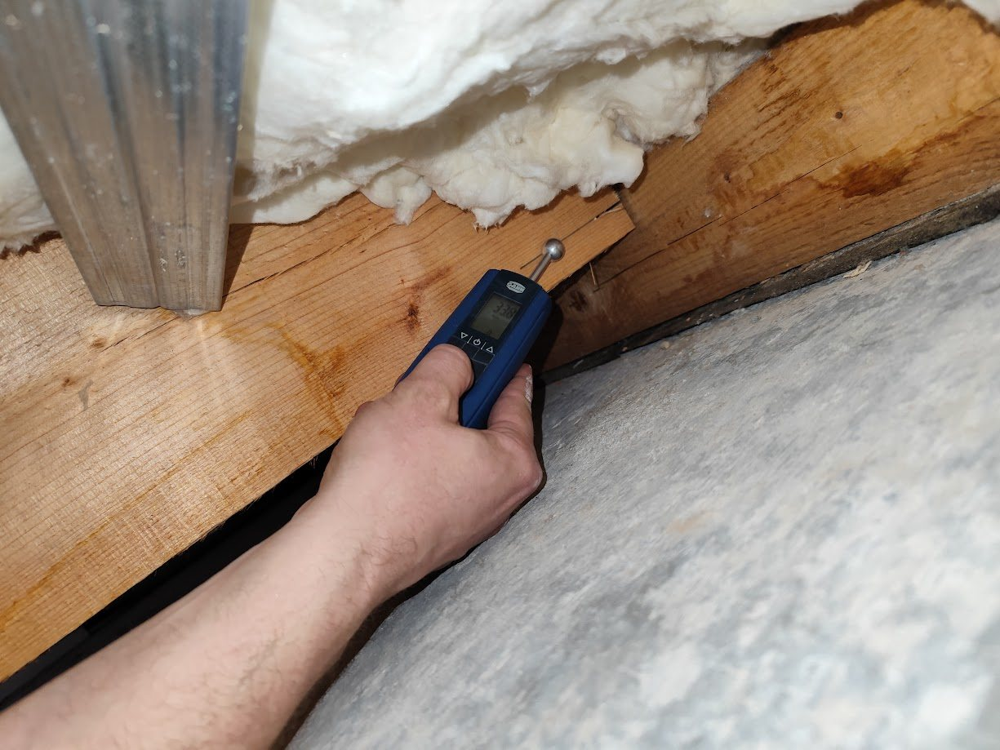
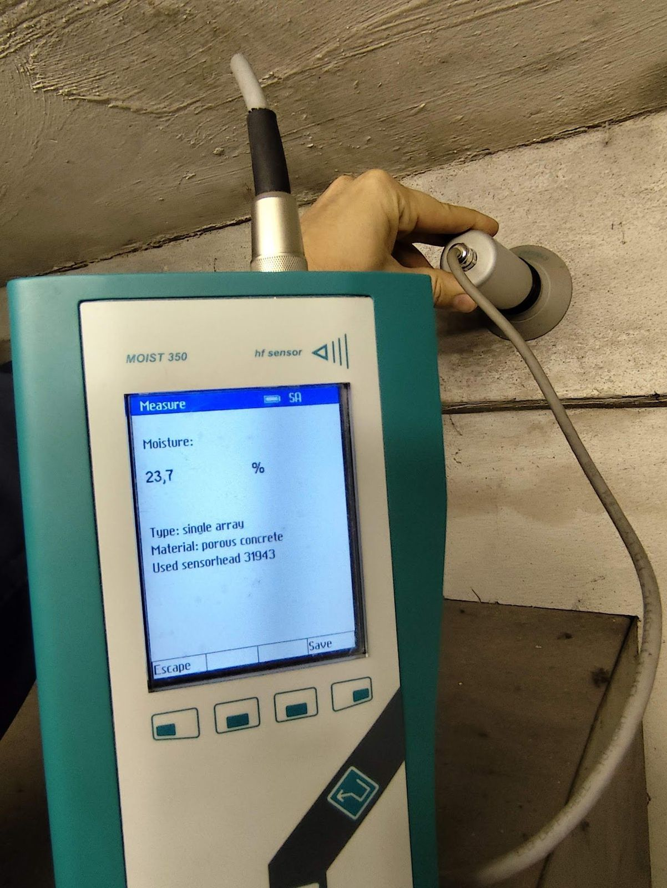
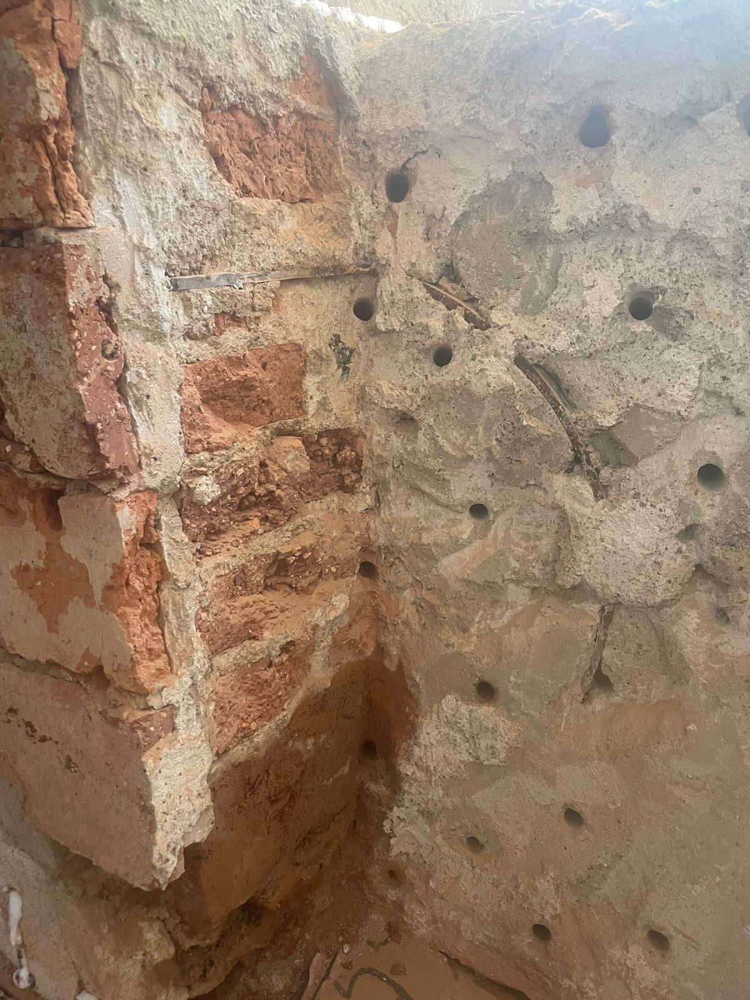
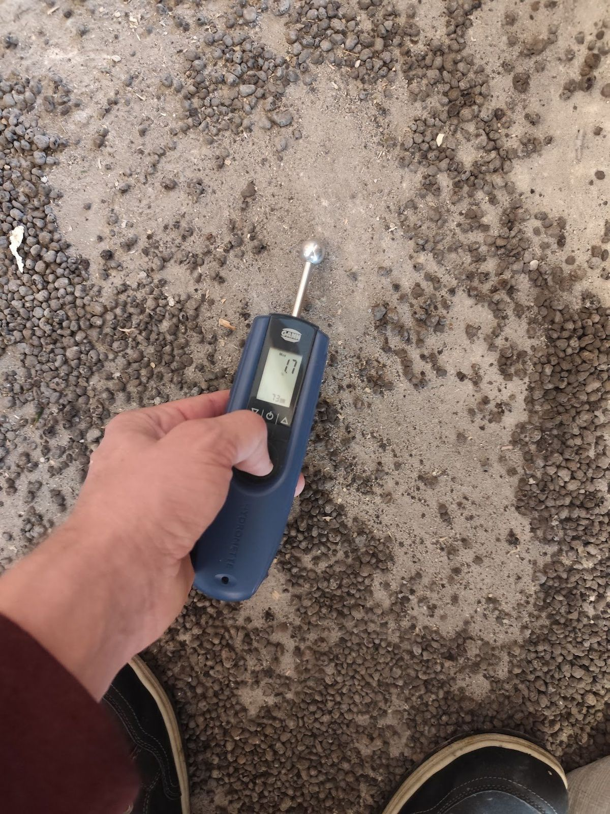

Úvodní fotka: Otázky a odpovědiNa co se lidé nejčastěji ptají
Odpovědi na otázky o sanačním průzkumu, vlhkosti zdiva a volbě sanace. Nenašli jste svou otázku? Zavolejte na +420 602 529 179.
Sanační průzkum
Nejčastější dotazy k tomu, jak sanační průzkum probíhá, co zahrnuje a jaké výsledky z něj získáte.

Proč nezačít rovnou sanací?
Protože bez průzkumu se sanace jen odhaduje. Vlhkost může vzlínat ze země, pronikat z boku, kondenzovat nebo vznikat provozem domu – a každá příčina potřebuje jiné řešení. Špatně zvolená metoda problém jen přesune a peníze jsou pryč.
Budete mi při průzkumu bourat zdi?
Ne. Odeberu jen malé vzorky pro rozbor. Vlhkost v hloubce zdi měřím mikrovlnným skenem MOIST bez vrtání.
Co dostanu jako výsledek?
Písemnou zprávu o více než 20 stranách: popis objektu, výsledky měření vlhkosti a rozbor zasolení, vyhodnocení příčin, fotodokumentaci a návrh technologie a materiálů. Ukázku si můžete prolistovat na stránce Ukázka průzkumu.
Kolik průzkum stojí?
Cena závisí na velikosti objektu a počtu vzorků. Přesnou cenu vám řeknu předem, ještě před průzkumem.
Proč mi nemůžete říct cenu sanace hned?
Bez průzkumu nevím, odkud vlhkost přichází a jak je zdivo zasolené. Cena odhadnutá od stolu je jen hádání – a často vede ke špatně zvolené sanaci.
Můžu zprávu předat projektantovi nebo památkářům?
Ano. Zpráva slouží jako podklad pro projektanta, stavební firmu i pro jednání s památkovou péčí.
Provádíte i samotnou sanaci?
Na realizaci se můžeme domluvit po průzkumu – podle rozsahu a typu stavby.
Kam jezdíte?
Po celé České republice. Sídlím v Hradci Králové.
Vlhkost a sanace
Odpovědi na nejčastější otázky o příčinách vlhkosti, možnostech sanace a souvisejících technologiích.

Odkud se bere vlhkost ve zdech?
Zdroje jsou tři. Atmosférická vlhkost – nejčastěji kondenzace na chladných stěnách, rozích a překladech. Podpovrchová – voda pod zemským povrchem, která vzlíná zdivem nebo tlačí do sklepa. Provozní – vzniká užíváním domu, například kvůli špatné hydroizolaci koupelny nebo kuchyně.
Jde sanovat každý dům?
Z vlastní zkušenosti mohu říci, že se dá vyřešit takřka vše. Je to otázka správně zvolených metod, jejich kombinace a investice.
Která metoda odvlhčení je nejlepší?
Univerzální metoda neexistuje. U cihelného zdiva s vodorovnými spárami je nejúčinnější podřezání (80–95 %), velmi dobrá je i injektáž (obvykle 70–90 %). U kamenného a smíšeného zdiva je podřezání problematické – vhodnější je injektáž nebo vzduchová dutina, s účinností kolem 50–70 %. Vždy rozhoduje průzkum.
Stačí na vlhkou zeď sanační omítka?
Nedoporučuji se na ni spoléhat. Žádný omítkový systém není navržen univerzálně. Povrchová úprava doplňuje odvlhčení – nenahrazuje ho. Nejdřív je nutné odstranit příčinu vlhnutí.
Funguje elektroosmóza?
Aktivní elektroosmóza je ověřená metoda, ale buďte velmi opatrní – na trhu je řada zařízení, která s elektroosmózou nemají nic společného. Vhodnost vždy posoudí průzkum.
Proč vadí zasolení zdiva?
Soli (dusičnany, chloridy, sírany) poškozují omítky a zdivo a ovlivňují volbu technologie i materiálů. Proto je při průzkumu měřím laboratorně a vyhodnocuji podle směrnice WTA.
Podlahy, beton a požár
Měření vlhkosti podlah, stav betonu a co dělat po požáru.

Kdy měřit vlhkost podlahy?
Vždy před pokládkou podlahové krytiny. Beton a potěry mohou na povrchu působit suché, ale ve vnitřních vrstvách zůstává voda, která se uvolňuje měsíce až roky. Pod nepropustnou krytinou pak vznikají bubliny, odlepení a plísně.
Co je karbonatace betonu?
Oxid uhličitý proniká do betonu a snižuje jeho zásaditost. Takový beton přestává chránit výztuž před korozí. Zkouškou zjistím, kde začíná zdravé jádro betonu.
Co dělat po požáru?
Jednat co nejdříve. Saze a toxické látky se rozšíří celým objektem a s vlhkostí rychle poškozují konstrukce. Čím dříve začne obnova, tím menší jsou škody i náklady.
Nejste si jistí, jak postupovat?
Ozvěte se mi – rád zodpovím vaše dotazy a doporučím další kroky. Nejlépe je začít sanačním průzkumem.